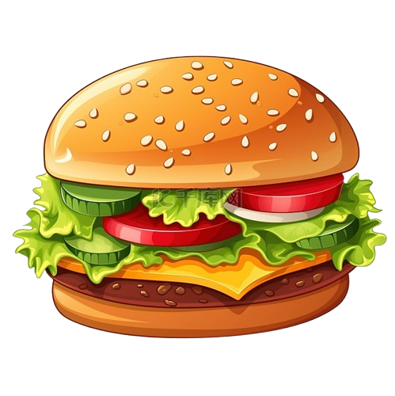

Il primo sistema di comande ibrido. Usa la versione Cloud per la massima flessibilità, oppure scarica la versione LAN per un sistema ultra-rapido sulla tua rete locale.
*La versione Windows richiede Windows 10/11 a 64-bit ed è utilizzabile da una persona alla volta.

Due architetture diverse, la stessa incredibile facilità d'uso.
Ideale per chi vuole tutto subito, senza installare nulla. Perfetto per sagre con copertura internet stabile o per gestire il menu da casa.
La soluzione per la massima reattività interna. Usa un router per creare una rete locale chiusa tra i tuoi dispositivi operativi.
Configura il tuo ristorante in 3 semplici passaggi.
BistroBo_Setup.exe scaricato da questo sito. Apparirà una finestra che ti chiederà di selezionare la rete corretta dal menu a tendina.